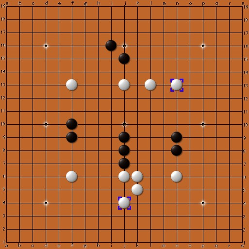
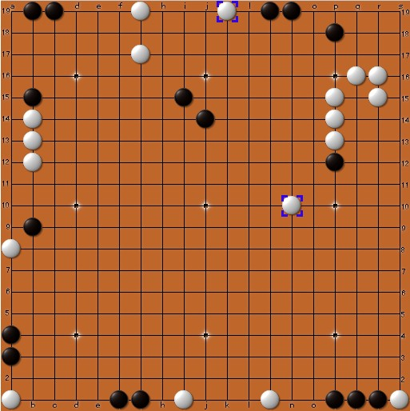
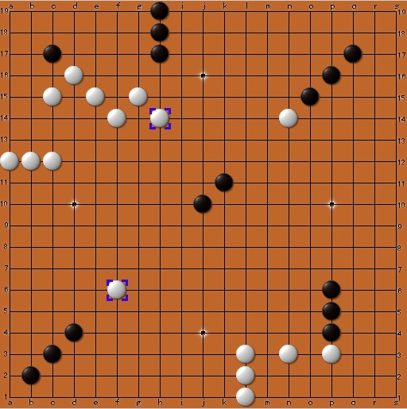
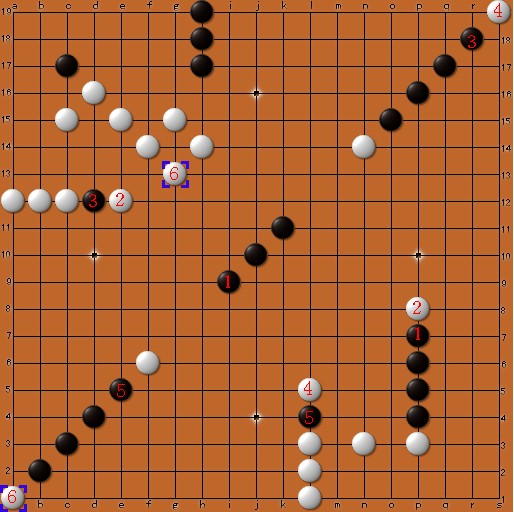
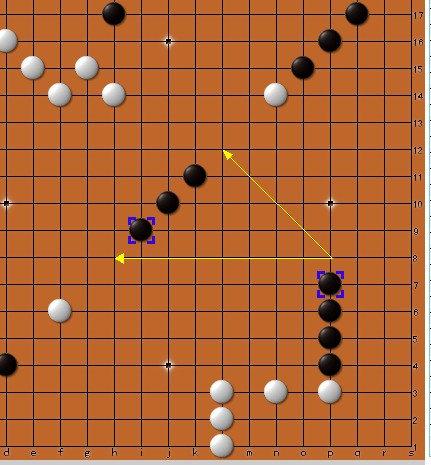
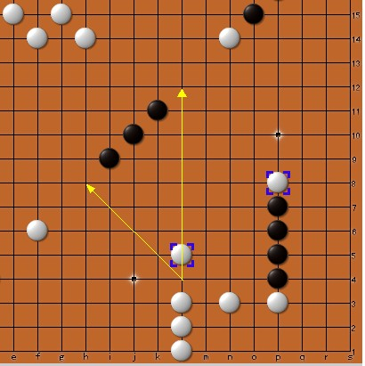
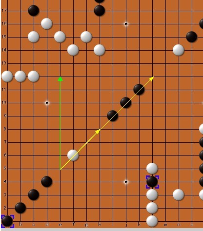
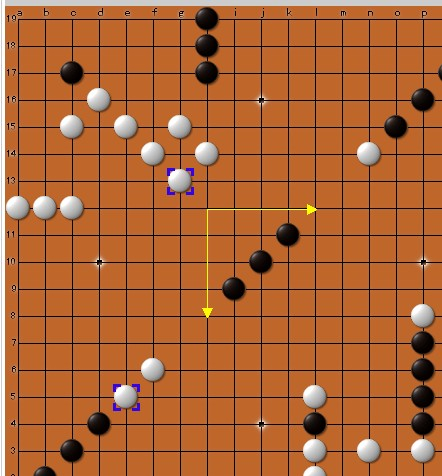
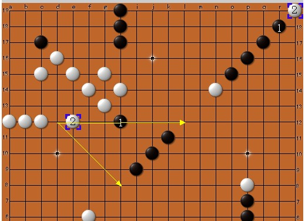
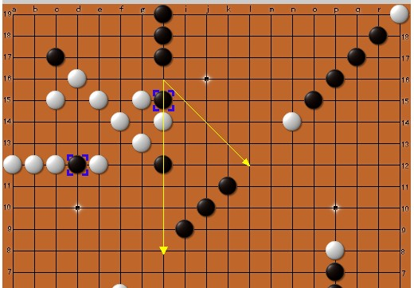

注明：这是双线五子棋的排局，，不妨当作趣味智力题来思考下
“双线五子棋”详细介绍：ShowPost.asp?ThreadID=11244
“双线五子棋”对弈网站：http://www.renrousousuo.com/DoubleLine.aspx
第一题，黑先胜。难度：8朵鲜花

上图可以动态打谱，网址：
http://www.renrousousuo.com/Research/DoubleLine.aspx#manuals=j9j
第二题，黑先胜。难度：12朵鲜花

上图可以动态打谱，网址：
提示：一切从冲四活三开始……
［ 蓝天蓝 于 2011-6-13 17:31:05 时花20金币送鲜花一朵］
type果然 大。。
大。。
不过，第二题只送10朵鲜花，，因为3楼的最后一步错了（就知道这最后一步会上当，哈哈）
顺便给围观的棋友解释一下：
2楼的解答是从黑11开始，一直冲四活三；
3楼的解答是从黑19开始，也一直冲四活三。
还有一题，也是黑先胜，难度：10朵鲜花

上图可以动态打谱，网址：
这题说难也不算很难，，主要是围绕中间的“活三”做文章。。
注意黑棋冲四的顺序，一旦顺序错，就会被白棋反四
看有没有人能做出这题，，稍后我会给出详细解说。
［此帖子已被 日出333 在 2011-6-13 18:27:23 编辑过］
［ 蓝天蓝 于 2011-6-13 23:01:50 时花20金币送鲜花一朵］

type请看此图，白棋反了。。
黑棋有三无法冲四
【 7楼 题目 详细解说 】
原题：
解答：
1. 黑棋冲四活三。。下一步，白棋挡住四以后，不能再去挡活三

2. 无法直接堵活三，白棋只能用冲四来“软禁”黑的活三，如图：

3. 黑棋再次冲四，为自己的活三“解锁”，且禁止白棋下一手来堵活三，
此处要注意，黑棋必须先冲左下角的四，才能锁住白棋的e12

4. 白棋只能冲g13来缓解黑棋活三的威胁，，

5. 此图同样意思，，不解释

6. 最后，黑棋第 4 次冲四活三，白棋防不住黑这个活三了。。

黑棋连续四次冲四，，顺序不能错（必须先右下、然后左下、然后右上，最后左上），，
否则白会反（可参考10楼）。
顺便回复11楼：如果黑棋先冲h15，则白棋会h16、g13形成冲四活三，先手权落到白棋手里。